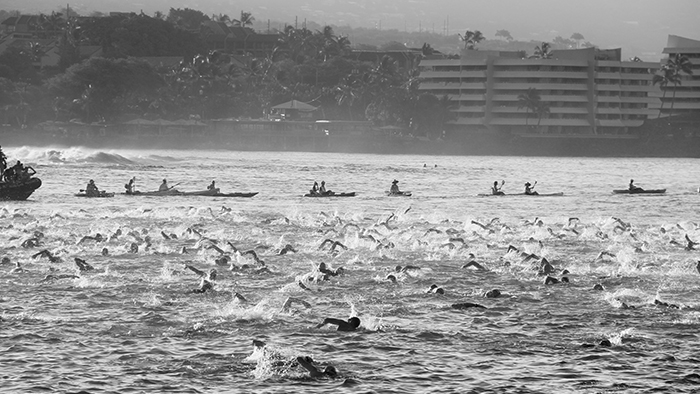

Pływanie
- 
-
Pływanie w triathlonie to pierwsza z trzech dyscyplin, wymagająca od uczestników sprawnego poruszania się w wodzie. Zazwyczaj odbywa się na otwartym akwenie, takim jak jezioro, morze czy ocean, choć czasem może to być basen. Długość trasy pływackiej może różnić się w zależności od dystansu triathlonu, ale standardowy dystans to 1,5 km. Pływanie stanowi unikalne wyzwanie, ponieważ triathloniści muszą poradzić sobie nie tylko z pokonaniem odległości, ale także z koniecznością radzenia sobie w zmiennych i nieprzewidywalnych warunkach. Start odbywa się zazwyczaj grupowo, co dodaje elementu współzawodnictwa i sprawia, że umiejętność nawigacji i unikania kolizji staje się istotna. Zawodnicy używają specjalnych strojów kąpielowych oraz okularów pływackich, a także mogą korzystać z różnych technik pływackich, takich jak kraul, żabka czy styl klasyczny. Efektywne pływanie pozwala na zaoszczędzenie energii na kolejne etapy triathlonu, co jest kluczowe dla osiągnięcia sukcesu w tej wymagającej dyscyplinie.